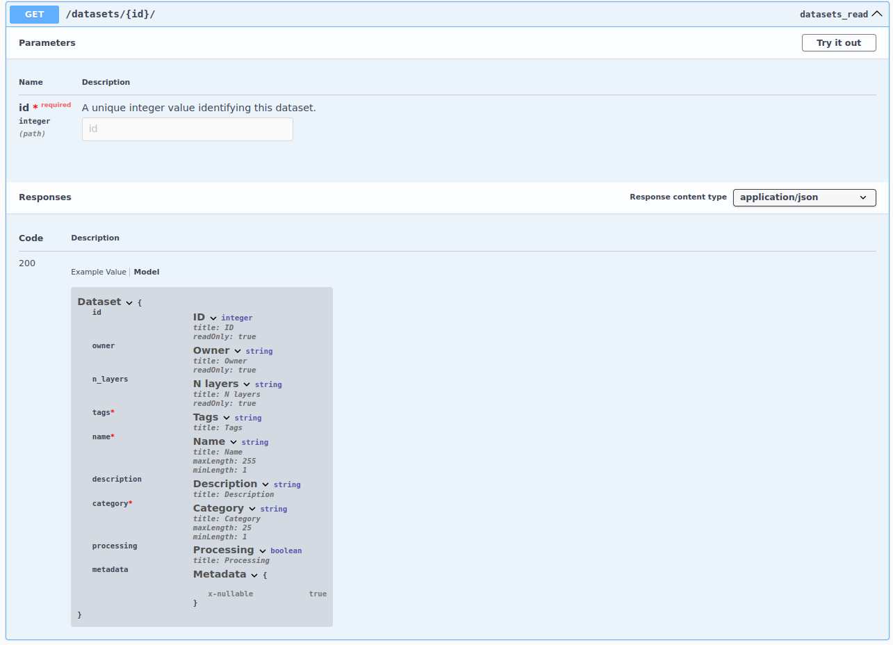
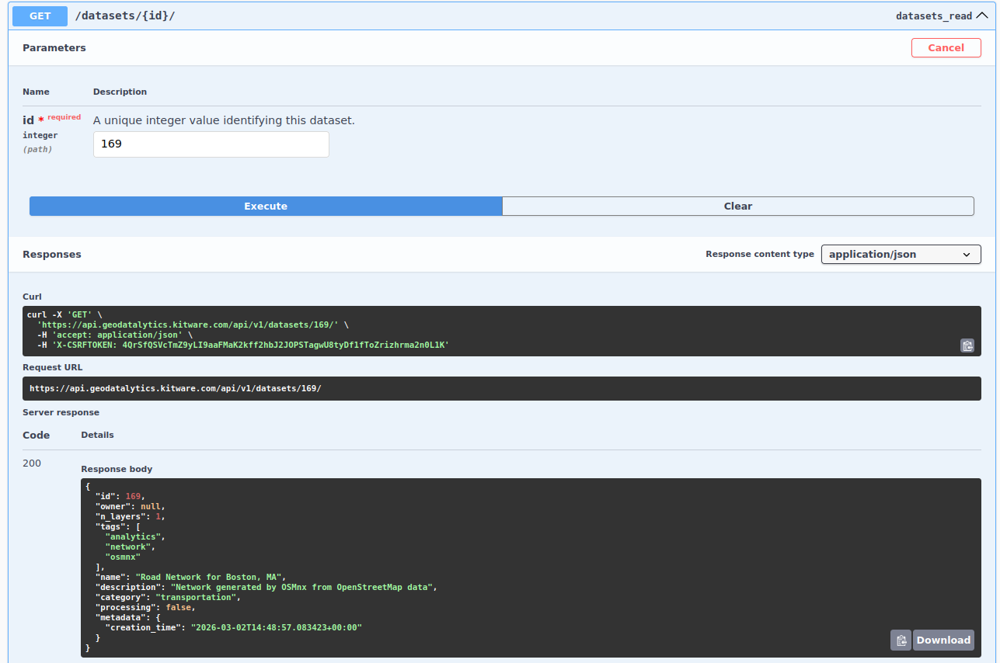
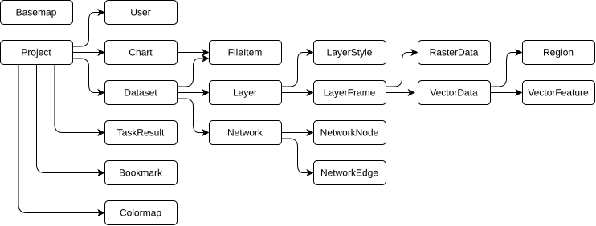

Introduction
While the web user interface provides controls to accomplish basic tasks for common use cases, there are some actions that cannot be performed in the user interface. Similarly, some advanced use cases might call for automation of certain actions. For these circumstances, the application programming interface (API) can be leveraged to fetch, create, update, and delete objects in the database, as well as spawn analytics tasks and await their results.
This guide is intended for Python developers with a basic understanding of requests.
Note
Please use caution when interacting with any API endpoints that perform database write operations. If you have any questions about the GeoDatalytics API, Contact Kitware so we can help support your use case.
Interactive Documentation
GeoDatalytics adheres to the OpenAPI specification and uses Swagger for its API documentation. The full API documentation can be accessed at the GeoDatalytics API Docs, which shows a list of all endpoints. Expanding an endpoint will show the schema for any expected inputs and outputs.

The “Try It Out” button will enable form controls to create and send a request to that endpoint. Response bodies are displayed as formatted JSON and can be copied to the clipboard or downloaded.

This interactive documentation will use your authentication if you have signed in to GeoDatalytics in another tab. Otherwise, your API access will be anonymous and limited to only public projects.
GeoDatalytics Models
The API endpoints are organized into groups by the model they pertain to. Before proceeding with API interactions, you should know how the GeoDatalytics models are organized. Each model has a unique purpose, attribute set, and relationships to other models.

Projects are the top level of organization. A project has a set of allowed users with different permission levels. A project can have zero or more datasets, charts, task results, bookmarks, and colormaps. Datasets and charts can have a relationship to a file item, which contains the original file content before conversion to a standard format. Some datasets can have a relationship to a network, which has relationships to network nodes and network edges.
A dataset must have one or more layers to show on the map, and a layer style can be created for a particular layer to control how that layer is visualized. Each layer must have one or more layer frames. Each layer frame must have a related raster data or vector data, which contains the converted, standardized data that is optimized for visualization. For vector data, this includes one or more individual vector feature objects. Some vector data may also have related region objects, which represent polygon features with specialized behavior.
The only model shown in the diagram above not related to any other models is the basemap. Basemaps are global objects containing a configuration for map tiles to show general geography. They are not constrained by the project.
Only some of these models have dedicated API endpoints; other models are more hidden implementations. There are even more hidden models not present in this diagram. Some models that do have API endpoints are read-only. For example, the vector and raster data models have read only endpoints for visualization, but they can only be created during a dataset conversion task, so they do not have a creation endpoint.
Most basic API use cases will only involve one or two models. If your use case is advanced and requires managing multiple model relationships, Contact Kitware so we can help support your use case.
Python Example
Interacting with the API via python scripts can be especially useful for automating tasks. For example, if you have a source of continuously updating sensor data, you could write a script to update a particular chart with the latest data and schedule your script to run once a day. The following python example demonstrates such a use case.
Your use case will likely require the use of other endpoints, but you will likely want all your requests to be authenticated, so at minimum you will need to use the token endpoint in a similar manner.
Note
For the primary production server, the value for base_url would be https://api.geodatalytics.kitware.com/api/v1.
import json
import requests
from datetime import datetime
with requests.Session() as session:
token = session.post(f'{base_url}/token/', dict(
username=username,
password=password,
)).json().get('token')
session.headers.update({
'Authorization': f'Token {token}',
'Accept': 'application/json',
})
new_datum_label = datetime.now().strftime('%Y-%m-%d')
new_datum_values = (5.5, 2.5)
chart = session.get(f'{base_url}/charts/{chart_id}/').json()
chart_data = chart.get('chart_data')
chart_data['labels'].append(new_datum_label)
chart_data['datasets'][0]['data'].append(new_datum_values[0])
chart_data['datasets'][1]['data'].append(new_datum_values[1])
response = session.patch(
f'{base_url}/charts/{chart_id}/',
dict(chart_data=json.dumps(chart_data))
)
print(response)